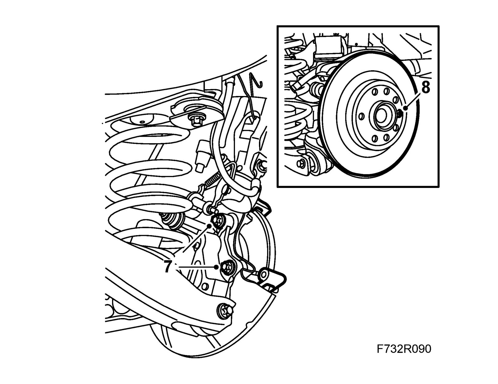
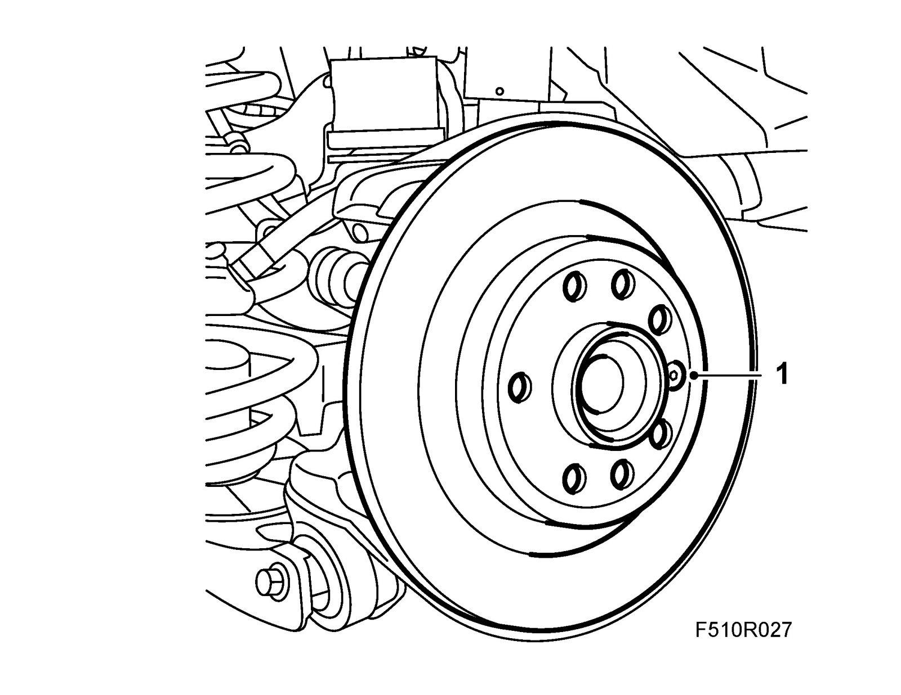
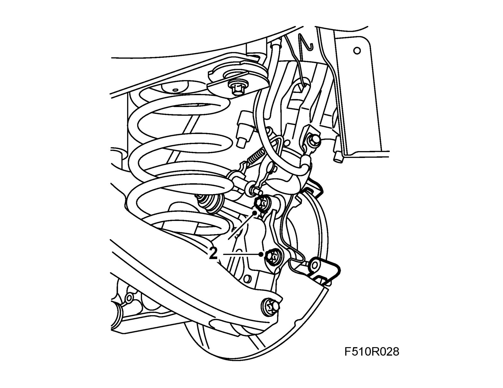
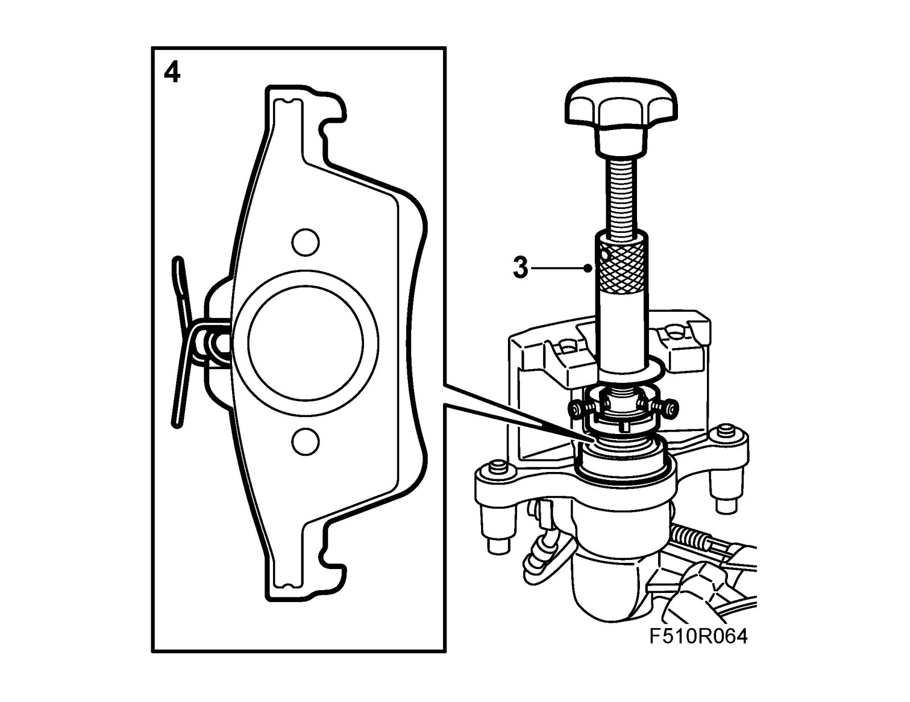
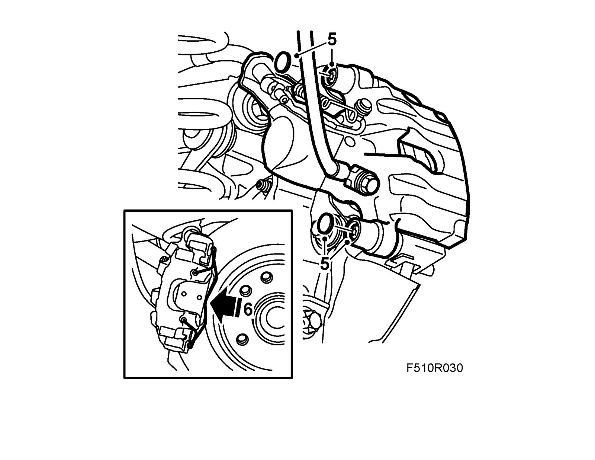

Brake Disc, Rear
Brake disc, rearTo remove
1. Raise the car.
2. Remove the wheel.
3. Remove the retaining spring from the brake caliper.
4. Remove the protective covers. Remove the hydraulic body and suspend it with a hook on the brake pipe holder.
Important
Be careful that the brake pipes do not get damaged.
5. Remove the brake pads.
6. Undo the screw of the upper suspension arm to provide access to the screw of the brake caliper retainer.
Note
Do not pull out the suspension arm screw all the way.
7. Remove the brake caliper carrier.

8. Remove the brake disc locking bolt. Lift off the brake disc.
To fit
1. Clean all the contact surfaces between the hub and the brake disc.
Fit the brake disc and locking bolt.
Tightening torque 7 Nm (5 lbf ft)

2. Clean the contact surfaces between the brake caliper carrier and the steering swivel member.
Fit the brake caliper carrier with 74 96 268 Thread locking adhesive.
Tightening torque 130 Nm +45° (96 lbf ft +45°)

3. Screw in the brake piston using 89 96 969 Resetting tool and 89 96 977 Adapter.

4. Fit the brake pads.
5. Fit the hydraulic body to the holder.
Tightening torque 28 Nm (21 lbf ft)
Fit the protective covers.

6. Fit the retaining spring to the brake caliper.
7. Tighten the suspension arm screw.
Tightening torque: 125 Nm +135° (92 lbf ft +135°)
8. Fit the wheel.
9. Lower the car.
10. Press the brake pedal a few times to press out the brake pistons and the Handbrake adjustment.